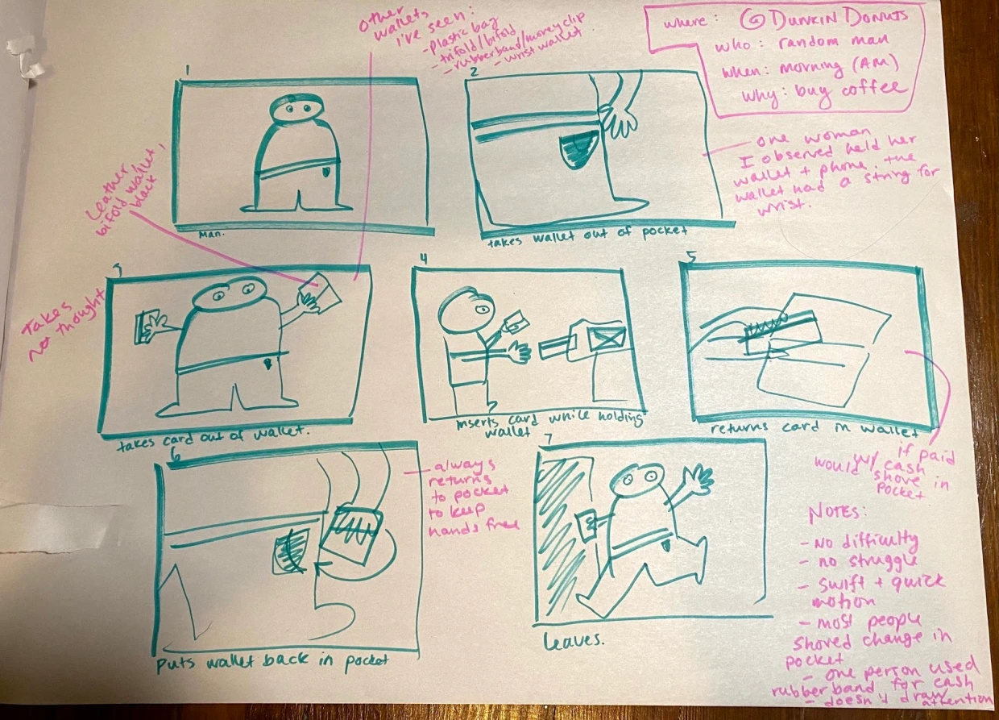
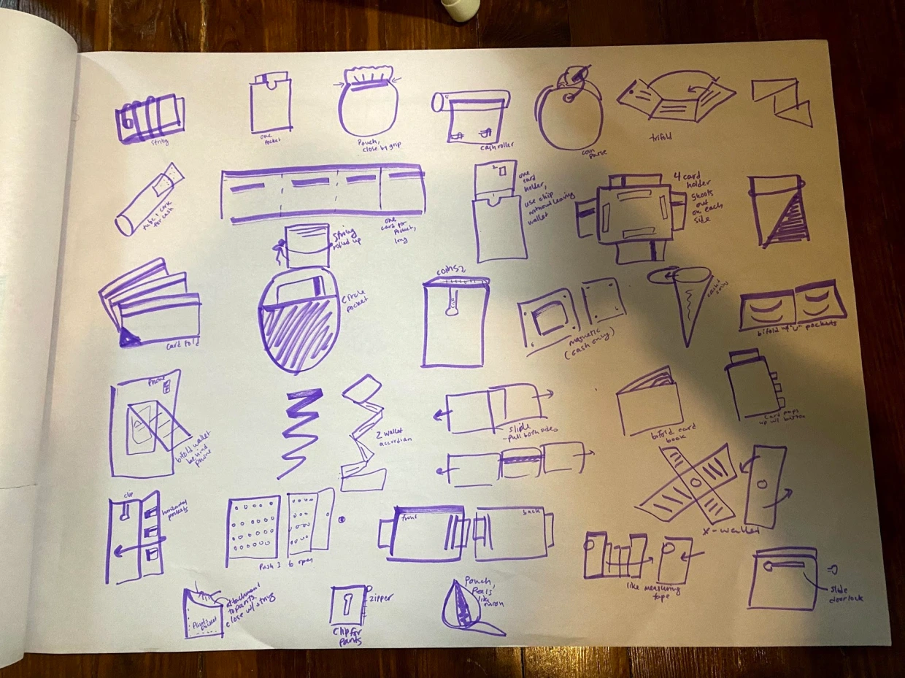
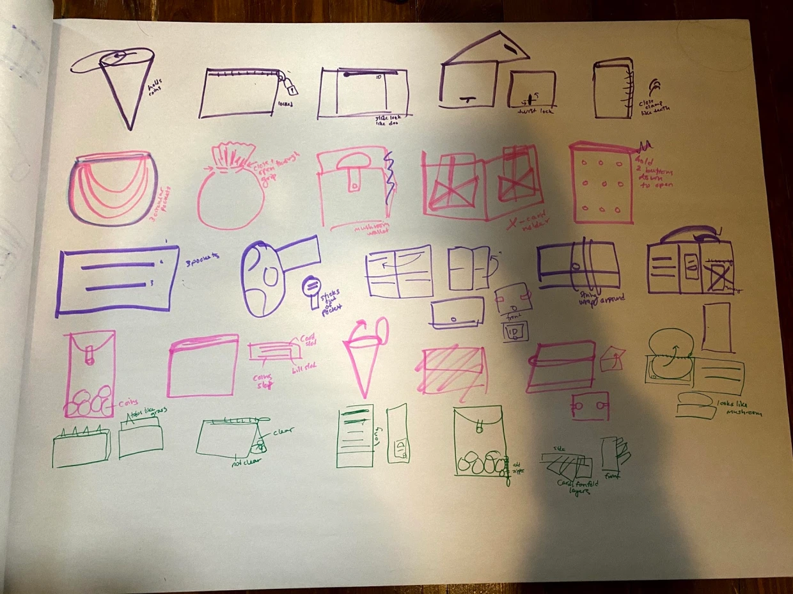
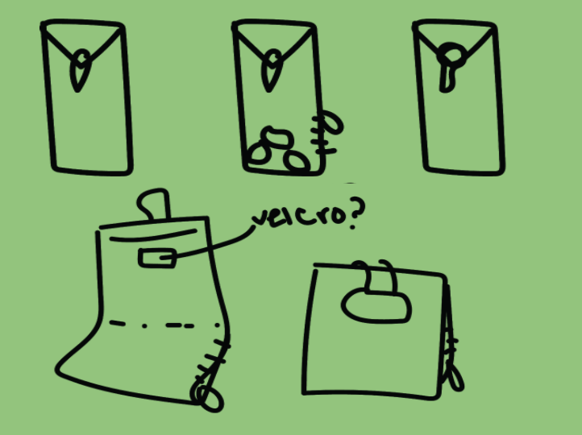
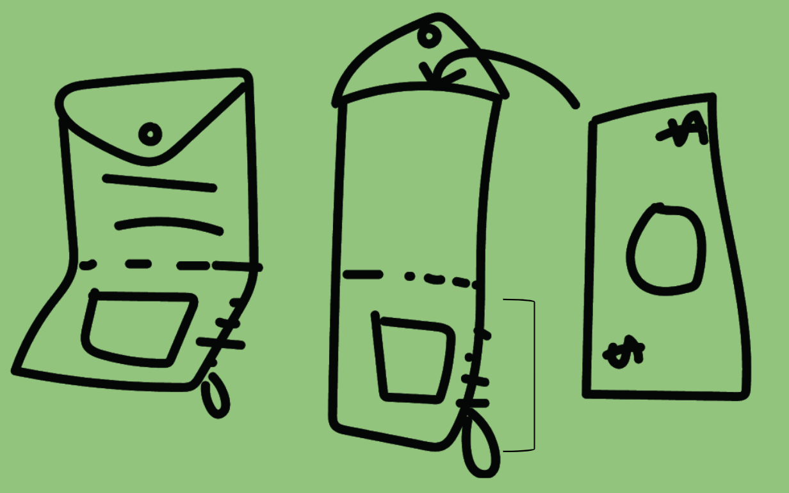

Mythical Creature Wallet
Task: Design a wallet that associates with the mythical creature, the gnome.
Research
Before I could start creating, I did research on the two subjects, wallet and gnome, to find a relationship where I can draw a connection.
Key takeaways:
- The first wallet was used to carry coins but evolved to carry paper currency in 1980, and evolved again to carry cards in the 20th century
- Most wallets were designed to fit in your pocket
- Gnomes protect treasure hidden underground where they live
- Gnomes are known to be guardians of the earth
I also got first hand research from observing how people interacted with their wallets while working at Dunkin Donuts.
Some Observations:
- People take swift motions to get out money and return to pocket
- Most people used bi-fold wallets
- Most people would just shove change into pocket
I created a story board of the steps in which people used their wallet.
From my observations, I want to make the wallet design easy to maneuver to make it more convenient to use and store.
Ideation & Iteration
 To start, I used my newsprint paper to create 50 iterations of wallet designs to get all my ideas out on paper.
Final Design
My favorite design was a long, vertical wallet that resembles a Chinese red envelope (hong-bao). In relation to gnomes, the length represents the depth and layers of the ground where the gnomes live. when you put coins in this wallet it becomes the treasure that the gnomes protect underneath. I continued to iterate on this design and added a zipper to make the coins at the bottom more accessible. I also added card slots and an ID holder for different wallet items. To make it smaller and easier to fit in your pocket, I folded it in half where it can be used horizontally with the zipper or as originally designed. This also alludes to the gnome’s small size.
This project has taught me a lot about the design process and made me realize how much thought goes into a single product. One thing I struggled with was creating 50 iterations because I ran out of ideas of ways to stretch a wallet as a gnome. However, I have enjoyed getting to use and challenge my creativity during this project.